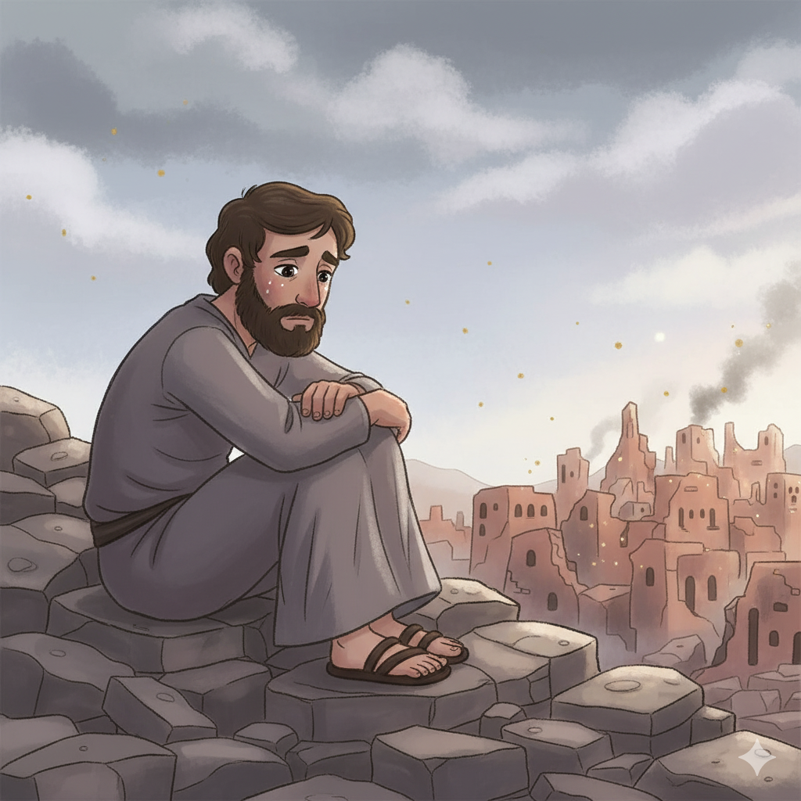
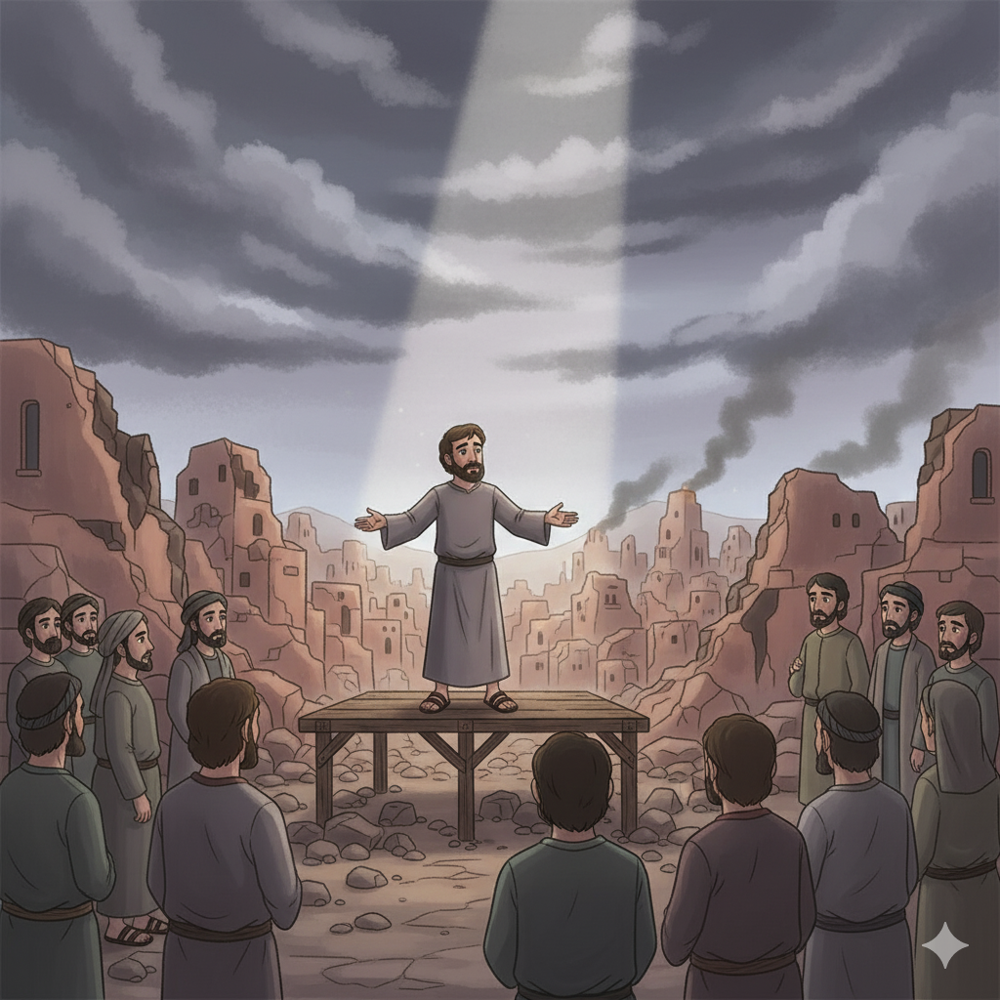
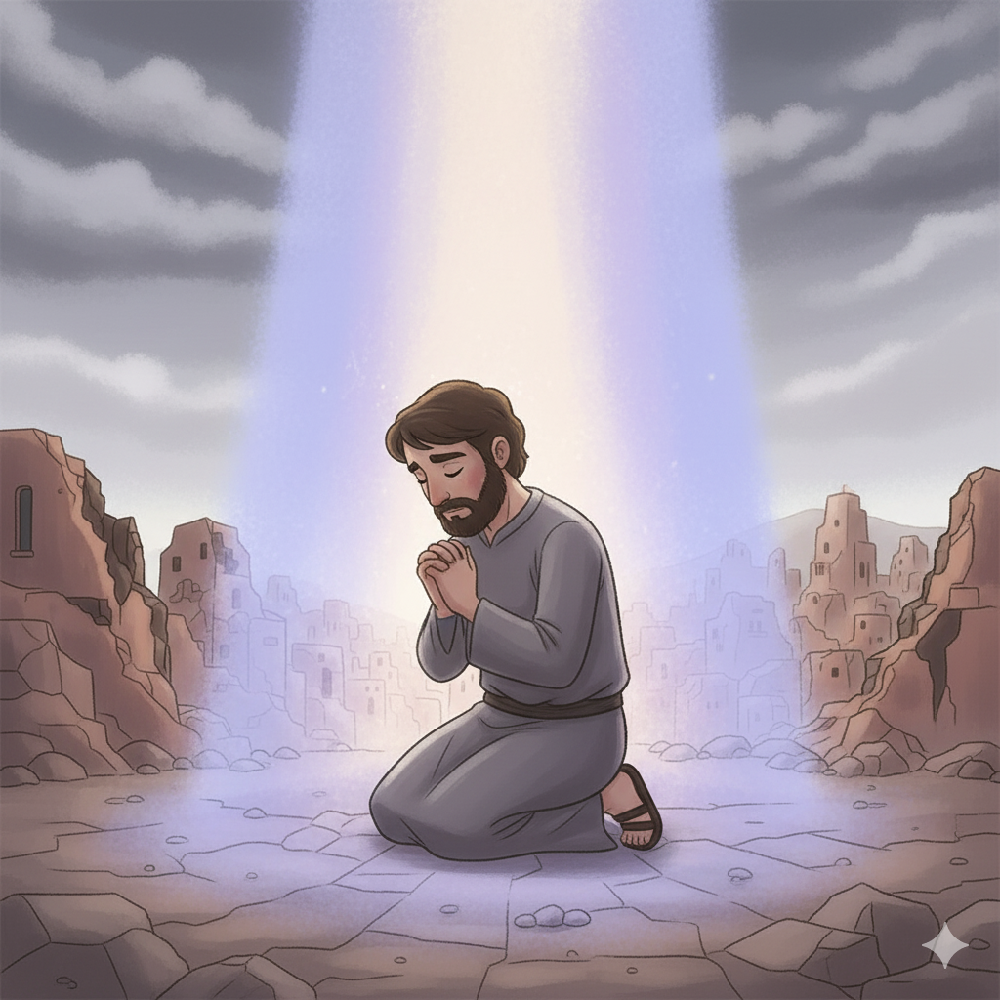
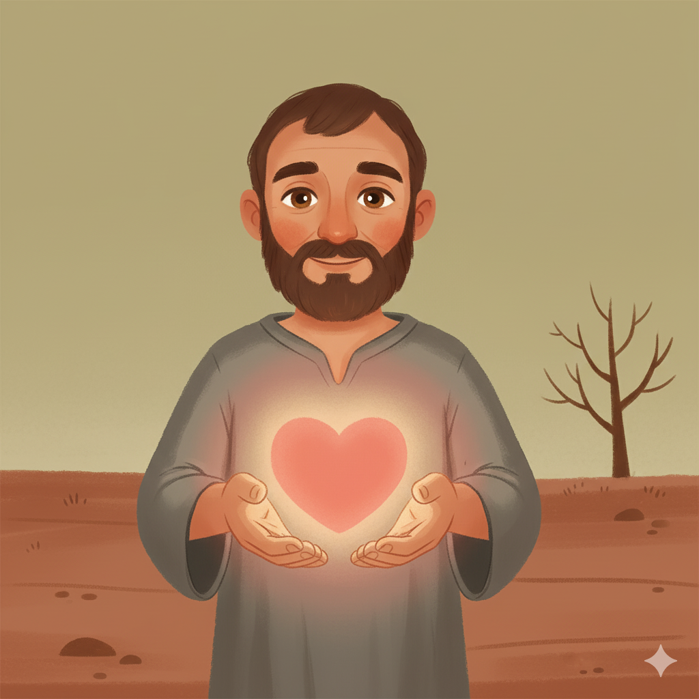
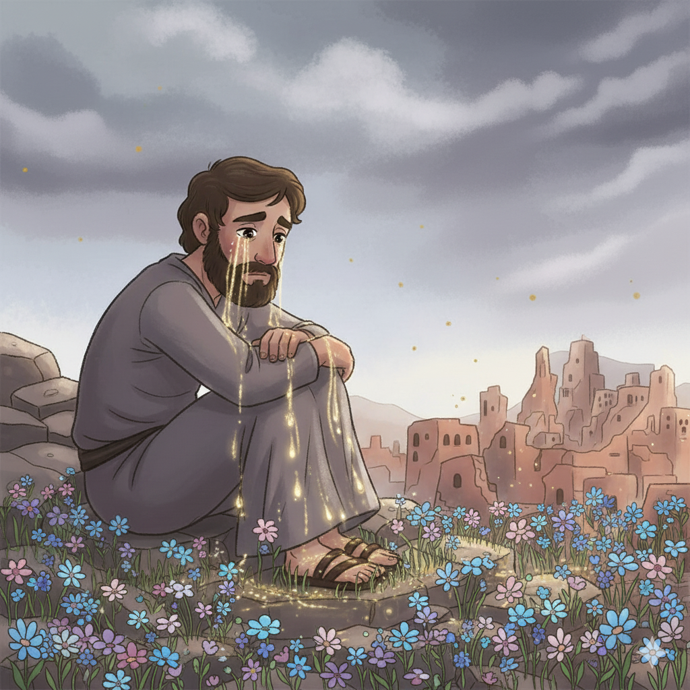

Lágrimas Honestas e Esperança no Amanhecer — Um Resumo Visual para Crianças
Jeremias não escondeu suas lágrimas e a tristeza,
Abriu o coração a Deus com total franqueza.
Chorou pela cidade, pelo povo e pela dor,
E Deus escutou cada lamento com amor!
Não precisa fingir que está tudo bem,
Deus quer que sejamos honestos também!
📖 Lamentações 1:1 — "Como está solitária a cidade que era tão populosa! Como se tornou como viúva!"
No fundo do lamento, uma luz brilhou,
Jeremias lembrou do Deus que o amou:
"Suas misericórdias não têm fim nem acabam,
Renovam-se cada manhã — nunca se apagam!"
Mesmo no dia mais escuro e difícil,
O amor de Deus amanhece — nunca é sutil!
📖 Lamentações 3:22-23 — "As misericórdias do Senhor... renovam-se cada manhã; grande é a tua fidelidade."
Tudo estava destruído — a cidade, o templo, o lar,
Mas Jeremias encontrou ainda um lugar:
"O Senhor é a minha porção", ele concluiu,
"Portanto, esperarei nEle" — e a esperança surgiu!
A esperança verdadeira não está nas coisas,
Está em Deus — e Ele não abandona as almas!
📖 Lamentações 3:24 — "O Senhor é a minha porção, diz a minha alma; portanto, esperarei nEle."
🌄
"As misericórdias do Senhor... não têm fim. Renovam-se cada manhã; grande é a tua fidelidade."
Lamentações 3:22-23
Este versículo está bem no MEIO do livro mais triste da Bíblia — como um diamante dentro do lama! Jeremias estava no pior momento possível quando escreveu isso. Isso prova que a esperança em Deus não depende de as coisas estarem bem!
Jeremias viu com seus próprios olhos o exército babilônico destruir Jerusalém, o Templo, os palácios. Em vez de fugir, ficou entre as ruínas e escreveu cinco poemas de dor. Seu choro não era fraqueza — era amor profundo por Deus e pelo povo!
📖 Leia na Bíblia — Lamentações 1:16
"Por isso choro; os meus olhos, os meus olhos destilarão água, porque longe de mim está o consolador."
No capítulo 1, Jeremias personifica Jerusalém como uma viúva — uma mulher que perdeu o marido e está sozinha, sem ninguém para confortá-la. A cidade que foi gloriosa agora está em ruínas. É uma das imagens mais poderosas e tristes de toda a Bíblia.
📖 Leia na Bíblia — Lamentações 1:1
"Como está solitária a cidade que era tão populosa! Como se tornou como viúva a que era grande entre as nações!"
No capítulo 3 — o centro e coração do livro — a voz muda de "ele" para "eu": o povo fala coletivamente sobre sua dor. E é exatamente aí, no meio do sofrimento, que surge a maior declaração de esperança: "As misericórdias do Senhor renovam-se cada manhã!"
📖 Leia na Bíblia — Lamentações 3:25
"Bom é o Senhor para os que nele esperam, para a alma que o busca."


📖 Leia em casa!
Lamentações tem 5 capítulos — cada um é um poema. O capítulo 3 é o centro do livro e o mais esperançoso, com os versículos mais famosos!
🏚️ Caps. 1–2: A Cidade em Ruínas
Jeremias descreve Jerusalém destruída — o Templo em chamas, o povo levado cativo, as ruas silenciosas. É uma cena de dor total. Mas Jeremias não perde a fé: reconhece que a disciplina de Deus vem de justiça e amor.
📖 Lamentações 2:11 — "Os meus olhos se gastaram de chorar; as minhas entranhas fermentaram; o meu fígado se derramou na terra."
🌅 Cap. 3: O CORAÇÃO do Livro — A Esperança!
O capítulo 3 é o clímax — bem no MEIO do livro. Jeremias está no seu ponto mais baixo... e aí ele para, lembra de Deus, e escreve os versículos mais bonitos. A esperança não está nas circunstâncias — está no caráter de Deus!
📖 Lamentações 3:22-23 — "As misericórdias do Senhor... renovam-se cada manhã; grande é a tua fidelidade."
🙏 Caps. 4–5: Oração pela Restauração
Os últimos poemas descrevem mais sofrimento — mas terminam com uma oração ao Senhor: "Tu, porém, reinas para sempre! Restaura-nos a ti!" O livro termina não com desespero, mas com o rosto voltado para Deus.
📖 Lamentações 5:21 — "Restaura-nos a ti, Senhor, e seremos restaurados; renova os nossos dias como dantes."
Lamentações nos diz que é permitido e saudável chorar — mesmo para quem crê em Deus. Deus não diz "pare de chorar". Ele diz "Eu ouço". Jesus também chorou (Jo 11:35). Trazer a dor honestamente a Deus é um ato de fé!
📖 Lamentações 3:55-56
"Invoquei o teu nome, ó Senhor, do fundo do abismo. Ouviste a minha voz."
Lamentações 3:22-23 está no livro MAIS triste da Bíblia — e é um dos versículos mais cheios de esperança! Isso ensina que a fidelidade de Deus não depende de como estamos nos sentindo. Ela é independente das circunstâncias!
📖 Lamentações 3:26
"É bom aguardar em silêncio a salvação do Senhor."
Jesus chorou sobre Jerusalém (Lc 19:41) — com as mesmas lágrimas de Jeremias. E na cruz, Jesus "bebeu o cálice" do julgamento que o povo sofreu, pagando por todos os nossos pecados. As misericórdias novas a cada manhã chegaram em definitivo com a ressurreição!


Lamentações existe para dizer: sua dor tem um lugar diante de Deus. Você não precisa fingir que está bem. Não precisa ter respostas para todas as perguntas. Pode chegar diante de Deus chorando — e Ele ouve!
📖 Lamentações 3:40-41
"Sondemos os nossos caminhos e os examinemos, e tornemos para o Senhor. Levantemos o nosso coração com as mãos a Deus nos céus."
Em meio às ruínas, Jeremias ancora a esperança não em "as coisas vão melhorar" — mas em "Deus é fiel". A fidelidade de Deus é a âncora que segura mesmo quando a tempestade destrói tudo ao redor!
📖 Lamentações 3:24
"O Senhor é a minha porção, diz a minha alma; portanto, esperarei nEle."
🌟 Lição Principal: No livro mais triste da Bíblia está o versículo mais esperançoso — provando que a fidelidade de Deus brilha mais forte exatamente na maior escuridão!
🔤 Poemas em forma de A-B-C! Lamentações é um acróstico hebraico — cada versículo começa com uma letra diferente do alfabeto hebraico (22 letras). É como escrever um poema onde cada linha começa com A, B, C... Jeremias chorou com arte e estrutura!
💎 O diamante no meio da lama: Lamentações 3:22-23 fica exatamente no CENTRO matemático do livro (capítulo 3 de 5, versículo 22-23 de 66 no capítulo mais longo). Parece que Jeremias colocou a joia da esperança bem no coração da dor!
✡️ Judeus lêem Lamentações no Tisha B'Av: Todo ano, o povo judeu lê esse livro na data em que o Templo foi destruído — sentados no chão, com pouca luz, em sinal de luto. É uma prática de mais de 2.500 anos!

Converse com sua família, turma ou professor sobre essas perguntas!
😢
Lamentações mostra que podemos ser honestos com Deus sobre a dor. Você já levou uma tristeza ou mágoa honestamente para Deus em oração? O que aconteceu? Ou por que ainda não fez isso?
🌅
"As misericórdias se renovam cada manhã." O que você acha que isso significa na prática? Como você pode começar o seu dia amanhã lembrando que as misericórdias de Deus são novas para você?
⚓
Jeremias perdeu tudo mas disse: "O Senhor é a minha porção." Se você perdesse tudo o que tem — casa, brinquedos, amigos — o que ainda sobraria? Deus seria suficiente para você?
Escolha um desafio (ou faça os três!) e seja um explorador da Bíblia!
📖
Leia os versículos 19 a 33 do capítulo 3 — a jornada de Jeremias da dor para a esperança. Identifique: em que versículo a virada acontece? O que muda na voz do escritor?
✍️
Escreva "As misericórdias do Senhor renovam-se cada manhã" e cole perto da sua cama. Cada manhã ao acordar, leia em voz alta — como um lembrete de que Deus começou um novo dia de graça para você!
🌅
Por 5 manhãs seguidas, anote: "Uma misericórdia nova que recebi hoje foi..." Pode ser pequena: acordar, respirar, ter família. Depois compartilhe com alguém o que percebeu sobre a fidelidade de Deus!
Trilho Kids | Desenvolvido com ❤️ para crianças © 2025